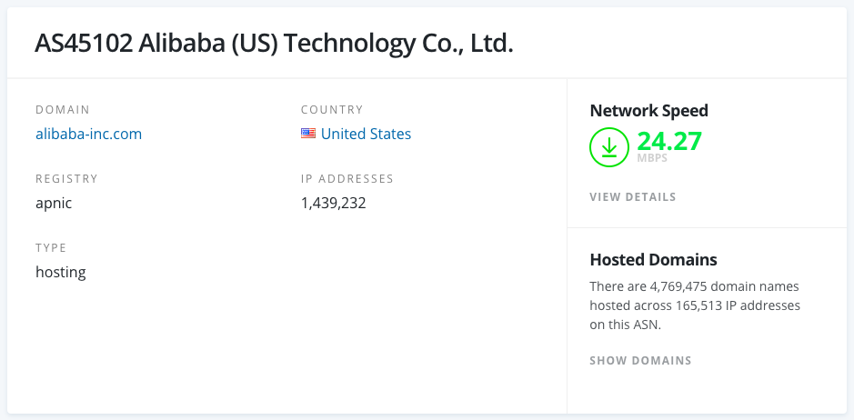

本文隶属于 科学上网 分类，点击分类名称可以查看更多相关文章；
申明：纯技术白话文整理说明，本博客以及本博主推荐大家使用机场服务用于学习，交流技术或爱好，例如YouTube/instagram/Github/谷歌学术/Pornhub（该站适度浏览有益，强行浏览灰飞烟灭）等世界著名社交/媒体平台；
主理人说
闲来无事，被迫摸鱼，如你所知（全国性的）；抽空收集及整理了一下关于机场各方面的白话文技术信息，大部分资料来自阿里云帮助文档以及公开的互联网档案信息。害，看了很久，似乎也没什么特别有趣的。(然后这篇文章应该会持续更新，以弥补某些技术背景空白。
SS/SSR/V2ray协议以及相应的软件支持可参考：
相关机场推荐：
机场是什么
飞机场/机场：巨佬以及巨佬的TECH们利用VPS/服务器（aliyun 全球/linode/vultr/CHOOPA/各种IDC/HKT/AZURE/CHT/CN2/PCCW/NTT/HKBN/NOVOSIBIRSK(泛指数据中心在某地理区域的服务器)/OSAKA(泛指数据中心在某地理区域的服务器)/HGC/DIX/HINET/WEBARENA/CTM/COGENT/COGENT GIA/RAKSMART...）等一切技术手段搭建科学上网服务：例如VPN/SS/SSR/V2ray（后面兴起的新型协议），因为最开始使用的ss客户端图标是飞机（小火箭），所以流行起了这个说法，不过这个较为原始的软件已经很少用了。现在较为流行，Clash/Quantumultx/Surge之类的软件，个性化；
机场的流行：以前还有GAE，FQrouter(特别好用)，影梭等；现如今，封锁越发严重，想上个网特别不易：一则个人单独搭建FQ服务成本较为昂贵，找人分摊难；二则技术维护周期长，有技术层面的要求；
什么是广域网和局域网？
广域网
广域网：又称外网、公网。是连接不同地区局域网或城域网计算机通信的远程网。通常跨接很大的物理范围，所覆盖的范围从几十公里到几千公里，它能连接多个地区、城市和国家，或横跨几个洲并能提供远距离通信，形成国际性的远程网络。广域网并不等同于互联网。
局域网
局域网：又称内网。是指在某一区域内由多台计算机互联的计算机组。局域网可以实现文件管理、应用软件共享、打印机共享、工作组内的日程安排、电子邮件和传真通信服务等功能。局域网是封闭型的，可以由办公室内的两台计算机组成，也可以由一个公司内的上千台计算机组成。在阿里云，相同地域下的ECS实例可以采用同类型网络配置实现内网互通，不同地域的ECS实例之间的内网隔离。
中继/中转/落地 术语
中继（中转/端口转发)，即两个或多个服务器之间通过端口进行流量转发。一般设计为 内容-国外服务器-中转至-国内服务器-用户，我们常见的节点例如沪美，沪日，沪韩等等，其中沪为国内服务器所在地，美为所在地为美国的服务器（例如阿里巴巴美国）。
UDP/TCP 协议及请求转发
UDP
用户数据报协议（英语：User Datagram Protocol，缩写：UDP；又称用户数据包协议）是一个简单的面向数据报的通信协议，位于OSI模型的传输层。该协议由David P. Reed在1980年设计且在RFC 768中被规范。典型网络上的众多使用UDP协议的关键应用在一定程度上是相似的。
TCP
传输控制协议（英语：Transmission Control Protocol，缩写：TCP）是一种面向连接的、可靠的、基于字节流的传输层通信协议，由IETF的RFC 793定义。在简化的计算机网络OSI模型中，它完成第四层传输层所指定的功能。用户数据报协议（UDP）是同一层内另一个重要的传输协议。
在因特网协议族（Internet protocol suite）中，TCP层是位于IP层之上，应用层之下的中间层。不同主机的应用层之间经常需要可靠的、像管道一样的连接，但是IP层不提供这样的流机制，而是提供不可靠的包交换。
应用层向TCP层发送用于网间传输的、用8位字节表示的数据流，然后TCP把数据流分割成适当长度的报文段（通常受该计算机连接的网络的数据链路层的最大传输单元（MTU）的限制）。之后TCP把结果包传给IP层，由它来透过网络将包传送给接收端实体的TCP层。TCP为了保证不发生丢包，就给每个包一个序号，同时序号也保证了传送到接收端实体的包的按序接收。然后接收端实体对已成功收到的包发回一个相应的确认信息（ACK）；如果发送端实体在合理的往返时延（RTT）内未收到确认，那么对应的数据包就被假设为已丢失并进行重传。TCP用一个校验和函数来检验数据是否有错误，在发送和接收时都要计算校验和。
via 维基百科
UDP 转发
会关注这个的，一般是希望通过代理服务器打游戏的；最新版的SS及SSR都默认开启了UDP转发，DUCK不必担心。PC 用户可以参考下面这篇文章中 SStap/NETCH部分（开源游戏加速工具）：
IPLC 中继/中转
一般就是IPLC（点对点的内网专线），我们机场常见的便是阿里云经典内网；所谓走IPLC的就是内网线路了。
其原理就是一台服务器在国外一台服务器在国内，所有的数据都是通过这两台服务器内网传输的。其优势就是不过GFW（所以不会存在被封的情况），因为是内网，防火墙检测不到，所以我们在国内访问的就是国内的服务器，然后国内的服务器走内网传输到国外的服务器帮我们上网，所以其就是就是快，稳定，不会受高峰期影响，但是就是成本高，基本上是按照流量去卖的，所以这种是限制用户流量的。
N3RO为此类；
BGP 中继/中转
还有一些是增加的BGP（就是中转或者叫中继，大陆全网优化），其原理也是国内一台服务器，国外一台服务器，但是与IPLC不同的是走的是公网。但是使用了BGP一后对线路的优化是特别明显的，但是给线路增加BGP服务器是花钱的，这也就增加了成本，所以一般不会给香港这么近的节点增加BGP服务器，而IPLC天生就是两台服务器就是自带中转的，所以访问起来更快。一般有BGP的都会标识出来，因为这也是一个卖点。
MDSS 梦迪机场为此类；
通俗点讲：中国电信 、中国联通、中国移动和一些拥有AS自治域（下文会说）的大型民营IDC运营商就可以通过BGP协议来实现多线互联。
BGP 协议/技术
1.通过BGP可以实现一个IP对应电信、联通、移动、长城、教育网等不同线路的带宽，而不需要服务器端配置多个IP。
2.BGP（边界网关协议）主要用于互联网AS（自治系统）之间的互联，BGP最主要的功能在于控制路由的传播和选择最好的路由。
3.中国网通、中国电信、中国铁通和一些大的民营IDC运营商都具有AS号，全国各大网络运营商多数都是通过BGP协议与自身的AS号来实现多线互联的。
4.使用此方案来实现多线路互联，IDC需要在CNNIC（中国互联网信息中心）或APNIC（亚太网络信息中心）申请自己的IP地址段和AS号，然后通过BGP协议将此段IP地址广播到其它网络运营商的网络中。使用BGP协议互联后，网络运营商的所有骨干路由设备将会判断到IDC机房IP段的最佳路由，以保证不同网络运营商用户的高速访问。所以说BGP是目前全球最好的双线技术。
BGP 线路有什么优势？
1.消除南北访问障碍。由于BGP可以将联通、电信、移动等运营商的线路“合并”，使得中国南北无障碍通讯成为可能。对接入层来说，可使“联通、电信”这类区别消失，更能使一个网站资源无限制的在全国范围内无障碍访问，而不需要在异地部署VPN或者异地加速站来实现异地无障碍访问。
2、高速互联互通。原来，一条线路访问另一线路往往要经过很多层路由，但实现BGP以后就像进入了高速公路。
原来带宽的利用率一般在40%左右，实现BGP后能达到80%以上。因此，原来10M独享带宽的速度，通过BGP只需要5M就可以满足，提升效率的同时也节省了成本。
ASN 自治系统

用于BGP路由中的每个自治系统都被分配一个唯一的自治系统编号（ASN），通常以 AS 开头。 对BGP来说，因为ASN是区别整个相互连接的网络中的各个网络的唯一标识，所以这个自治系统编号非常重要。 互联网地址分派机构将64512到65535的ASN编号保留给（私有）专用网络使用。
例如阿里巴巴的ASN则为 AS45102；编号相关信息可以在 IP.SB 或 bgp.he.net 或 ipinfo.io 查看。
怎么选择合适的机场
好的机场，合适的机场，实惠，黑科技等等。大多数时候，机场都是靠口碑传播的，即人传人（武汉肺炎），目前较为老牌的有N3RO（IPLC/SS机场），主打稳定，高速，面向上班族，白领，办公或对网络环境及稳定性有较高要求的人群；同款机场主的有卡车家族（SSR/中转机场），面向学生党，主打经济，实惠，流量大；
额外的废话
1.市面上还有很多机场，2019年不完全统计有200+不等，稍微谷歌一下就有很多结果；
2.稳定/靠谱/受众较多的当然亦有很多；
3.有很便宜的，也有Rix一般贵的（其实也不能说是贵
4.当然，用价格来细分市场/划分用户也是及其精明的营销策略；（大雾
6.博主我更看重折中一点的，流量刚好合适，价格合适，起步低；
7.例如卡车家族，完美中转线路，学生党会很喜欢，折后9元起；
8.IPLC专线，例如N3RO，折后17.8元也能有了；
9.另外，卡车家族以及N3RO在毒奶这里都有提供专属折扣优惠码；
10.虽然这优惠也没多少，5%-10%，但能省则省不是；
11.能访问得到本站的你，也算是付出不少努力了...
12.博主精力有限，在使用和持续跟踪的机场不多，但3-4个机场足以；
via 机场专线 查看适合你的机场推荐；
以上。
联系主理人
1.关注频道 https://t.me/limboprossr 不失联；
2.毒奶粉们（我管我的Fans）可联系 TG机器人 或发送 邮件 获取帮助；
3.或点击本页面右下角的聊天按钮联系；
附注
版权属于：毒奶
联系我们： https://limbopro.xyz/6.html
电报频道： https://t.me/limboprossr
推特账号： https://twitter.com/limboprossr
集美账号： https://www.instagram.com/limboprossr/
油管账号 ： http://bit.ly/2VJcz7o/
机场推荐： https://limbopro.xyz/865.html
上网必会： https://limbopro.xyz/archives/2910.html
广告屏蔽： https://limbopro.xyz/archives/adguard.html
实用工具： https://limbopro.xyz/category/tools/
网站优化： https://limbopro.xyz/category/Typecho/
美图欣赏： https://limbopro.xyz/category/instagram/
开车专栏： https://limbopro.xyz/category/NSFW/
返回源站： https://limbopro.github.io（每日0点更新）本文链接：https://limbopro.xyz/archives/7696.html
本文采用 CC BY-NC-SA 4.0 许可协议 ，转载和引用时请注意遵守协议！


{kind=link}